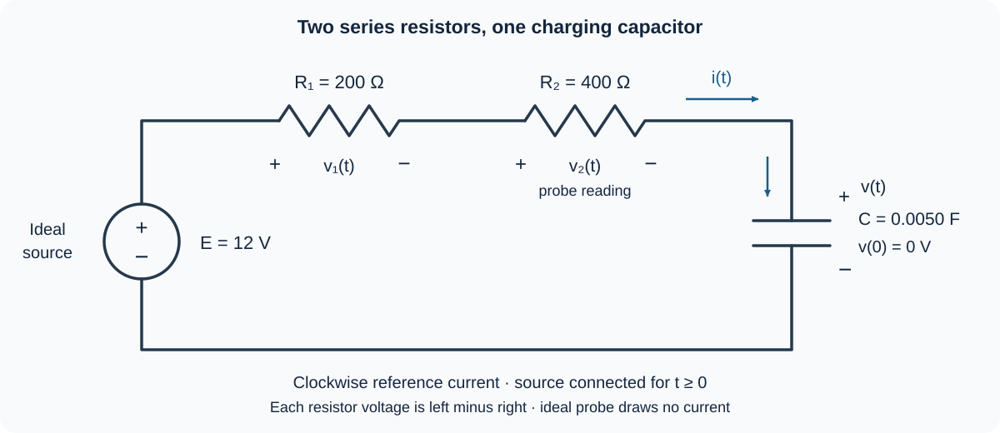

Course practice / Batch 08 / 2026-10-11 PDT
MTH 256
一阶微分方程
First-order differential equations · 初值验证、方向场、分离变量、积分因子，以及变化率标定的冷却、固定迁入增长、逻辑斯蒂模型比较、混合设计与串联 RC 电压分配
Doubling a solution also changes its forcing
Consider \(y^{\prime}+2y=2\), with \(y(0)=4\), and the candidate \(u(t)=1+3e^{-2t}\). Both t and y are dimensionless; consider real t.
- Identify the independent variable, dependent variable, order, and whether the equation is linear in y. Identify the coefficient of y and the forcing term.
- Differentiate u and verify both the equation and the initial condition. Find the initial slope directly from the equation and from u.
- Define \(w(t)=2u(t)\). Calculate \(w^{\prime}+2w\). Does w solve the original differential equation? Does it satisfy the original initial condition?
- Find the constant b and initial value a for which w solves \(w^{\prime}+2w=b\), \(w(0)=a\). Explain why an equation being linear does not mean that doubling a solution preserves a fixed nonzero forcing term.
中文提示（不含解答）
把候选函数及其导数一起代入左端；核验微分方程和核验初值是两个独立步骤。
The field is steepest along its middle row
For \(y^{\prime}=1/(1+y^2)\), both t and y are dimensionless. Use t on the horizontal axis and y on the vertical axis.
- Compute the slopes at all nine points with \(t\in\{0,1,2\}\) and \(y\in\{-2,0,2\}\), then sketch a short line segment at each point.
- Explain why the slopes repeat along each horizontal row and why the rows y = −2 and y = 2 match.
- Does this field contain any horizontal segments or constant equilibrium solutions? Must every solution increase wherever it is defined?
- As a solution rises from y = −2 toward y = 0, does it become steeper or flatter? What happens as it rises from y = 0 toward y = 2? Find the greatest possible slope anywhere in this field. Do not solve the differential equation.
中文提示（不含解答）
比较分母随纵坐标的变化；斜率的正负与斜率的大小分别回答运动方向和陡峭程度。
Successive halvings take different amounts of time
Solve \(y^{\prime}=-y^2/(t+1)\), \(y(0)=2\), for \(t\ge0\). Both variables are dimensionless.
- Check for a constant solution before dividing by a factor involving y. Separate variables and solve the IVP.
- Verify the equation and initial value. Show from your formula that this solution stays positive and decreases throughout the stated interval. Find its long-term limit.
- Find the first times at which y = 1 and y = 1/2, exactly and to three decimals.
- Compare the elapsed time for the decrease from 2 to 1 with the elapsed time for the decrease from 1 to 1/2. Are they equal? Find \(y^{\prime}/y\) along the solution and explain why this is not constant-rate exponential decay.
中文提示（不含解答）
求出两次达到目标值的时刻后，再相减得到第二段所用的时间；不要把到达时刻直接当成区间长度。
Choose a constant input to fit a second reading
A dimensionless response satisfies \(y^{\prime}+y/(t+2)=a\) for \(t\ge0\), where a is an unknown constant. The readings are y(0) = 1 and y(2) = 3; t is dimensionless.
- Find an integrating factor and show the product-derivative equation. Solve the initial-value problem in terms of a, using y(0) = 1.
- Use the second reading to determine a. Write the resulting y(t), and verify the differential equation and both readings.
- Find the predicted value y(4) and the initial slope, exactly.
- Use the derivative of the fitted solution to decide whether it is increasing for every t ≥ 0. If only y(0) = 1 had been given, would that reading alone determine a? Explain using your one-parameter formula.
中文提示（不含解答）
先把未知常数保留在通解中，用第一个读数确定积分常数，再用第二个读数确定模型参数。
A positive input can produce a response that later falls
Solve \(y^{\prime}+2y=e^{-2t}\), \(y(0)=0\), for \(t\ge0\). Both variables are dimensionless. Regard \(e^{-2t}\) as an input and 2y as the term subtracted from that input to obtain the net rate \(y^{\prime}\).
- Find an integrating factor, show the product-derivative equation, and solve the IVP.
- Verify the equation and initial value. Find the initial slope and y(1) exactly.
- Find the time and value of the maximum response for t ≥ 0. Give exact values and the maximum to three decimals, and use derivative signs to justify it.
- Compare the input \(e^{-2t}\) with 2y before, at, and after the maximum. Explain why the solution can decrease even though the input remains positive. State whether y is positive for t > 0 and find its long-term limit.
中文提示（不含解答）
乘上积分因子后，右端可能大幅简化；判断增减时比较净变化率，而不是只看输入项是否为正。
Calibrate cooling from an initial rate measurement
A sample starts at 80 °C in a room held at 20 °C. At the start, its measured temperature rate is −9.0 °C/min. Assume Newton's model \(T^{\prime}=-k(T-20)\), where \(k>0\) is constant, T is in °C, and t is in minutes. Use this model for \(t\ge0\).
- Use the initial temperature and initial rate to determine k, including its units. Write and solve the IVP for T(t).
- Find T(10), to two decimals. Find when the sample first reaches 35 °C, exactly and to two decimals in minutes.
- Find the first time the magnitude of the cooling rate is 1.5 °C/min. Give the time exactly and to two decimals, and find the sample temperature then.
- After that time, does the cooling-rate magnitude stay below 1.5 °C/min? Find the limiting temperature and limiting rate, and explain whether a zero cooling rate is reached at a finite time.
中文提示（不含解答）
初始变化率也能用来确定模型参数；冷却速率的大小要取绝对值，并与温差联系起来。
A steady arrival stream changes doubling times
A continuously modeled insect population begins with 250 insects. Reproduction contributes 0.080P insects/day when the current population is P; 0.080 has units day\(^{-1}\). A separate stream also adds 20 insects/day continuously. All arrivals join the reproducing population immediately. Assume no deaths, removals, or carrying-capacity limit, and use t in days for \(t\ge0\).
- Write the IVP for P(t) and solve it using an integrating factor. Verify the initial count.
- Calculate the initial reproduction rate, arrival rate, and net rate, with units. Find P(10) to the nearest insect.
- Find the first times the population reaches 500 and 1000 insects, exactly and to two decimals in days.
- Compare the elapsed time from 250 to 500 with that from 500 to 1000. Which is longer? Write the per-capita net rate \(P^{\prime}/P\) and explain why constant arrivals prevent a single fixed doubling time for all population sizes.
中文提示（不含解答）
固定每天加入的数量与按当前数量成比例的增长是两种不同项；第二次翻倍的时长需要用两个到达时刻相减。
Compare unlimited growth with a logistic forecast
Two mathematical forecasts start from the same count of 100 organisms. The logistic forecast obeys \(N^{\prime}=0.40N(1-N/1000)\), N(0) = 100. The unlimited-growth forecast obeys \(G^{\prime}=0.40G\), G(0) = 100. Time t is in days, the coefficient 0.40 has units day\(^{-1}\), and the logistic carrying capacity is 1000 organisms. Treat both counts as continuous and use the models for \(t\ge0\).
- Find the nonnegative logistic equilibria and classify them using the sign of the logistic rate. Solve both IVPs by separation and check their initial counts.
- Compare the two initial growth rates, with units. Does using the same coefficient 0.40 make those initial rates equal?
- Find the time when G first reaches 1000 organisms, exactly and to two decimals. Find the logistic forecast N at that same time, exactly and to two decimals. State each forecast's long-term behavior.
- Form the ratio G(t)/N(t). Find the first time the unlimited forecast is twice the logistic forecast, exactly and to two decimals. Explain why the two forecasts can agree initially but diverge later.
中文提示（不含解答）
比较两个模型时要在同一个时刻代入；先化简两个显式解的比值，再求指定的倍数关系。
Design the incoming brine to meet a target concentration
A tank initially contains 100 L of liquid with 2.0 kg of dissolved salt. Brine enters at 5 L/min and perfectly mixed liquid leaves at 5 L/min. The constant inlet concentration c, in kg/L, is to be chosen so that the tank concentration is 0.040 kg/L at t = 20 min. Assume constant rates, perfect mixing, no evaporation, and no other losses. Let S(t) be salt mass in kg and C(t) = S(t)/V(t) the tank concentration in kg/L. Use t in minutes.
- Find the volume and write the IVP for S(t) in terms of c. Solve for S(t) and C(t), checking the initial contents.
- Use the target at 20 minutes to determine c exactly and to five decimal places. Show that your chosen c is greater than the target tank concentration and explain why this is consistent with gradual mixing.
- Using this c, find the initial net salt-entry rate and the net salt-entry rate at t = 20, to four decimals in kg/min. Show that the tank concentration increases throughout the first 20 minutes.
- Find the total salt admitted and the total salt removed during the first 20 minutes, to four decimals in kg. Use the overall salt balance to check the final mass. Find the average concentration of the 100 L of liquid discharged during that interval, to five decimals in kg/L.
中文提示（不含解答）
先把入口浓度作为未知常数解方程，再使用终点目标；出口累计带走的盐量可以由整体质量守恒求出。
Read a resistor-voltage probe while a capacitor charges
The diagram shows one series loop with an ideal constant 12 V source, resistors \(R_1=200\) Ω and \(R_2=400\) Ω, and a capacitor \(C=0.0050\) F. At t = 0 the capacitor is uncharged: v(0) = 0 V. For t ≥ 0 the loop remains connected. Current i(t), in amperes, is positive clockwise, into the capacitor's upper plate. Capacitor voltage v(t) is positive at the upper plate. Each resistor voltage, \(v_1(t)\) or \(v_2(t)\), is measured as the potential at its left terminal minus that at its right terminal. Thus \(v_1+v_2+v=12\). Use t in seconds and all voltages in volts; assume ideal components and a voltage probe that draws no current.
- Combine the series resistances, write and solve the IVP for v(t), and find the time constant. Explain why the two resistors do not require two separate capacitor-voltage equations.
- Find i(t), \(v_1(t)\), and \(v_2(t)\). Give their initial values and long-term limits, using mA for current.
- An indicator turns on when the measured voltage \(v_2(t)\) first falls to 2 V. Find that time exactly and to three decimals. Find the capacitor voltage, capacitor charge, and current at that instant, with units. Check all three voltage drops against the 12 V source.
- At t = 3 s, find the fraction of the source voltage across each resistor and across the capacitor, exactly. Show that these fractions add to 1. Does the fixed ratio \(v_2/v_1\) mean that each resistor's voltage stays constant?

中文提示（不含解答）
串联元件中的电流相同；先求电容电压，再用欧姆定律求每个电阻上的读数，最后检查各电压降之和。